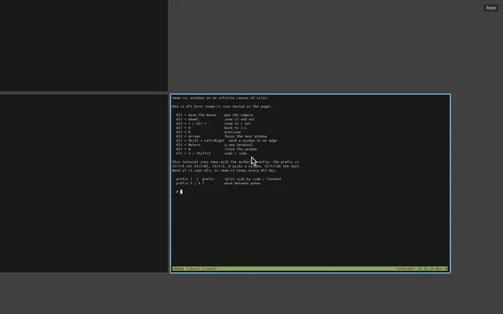
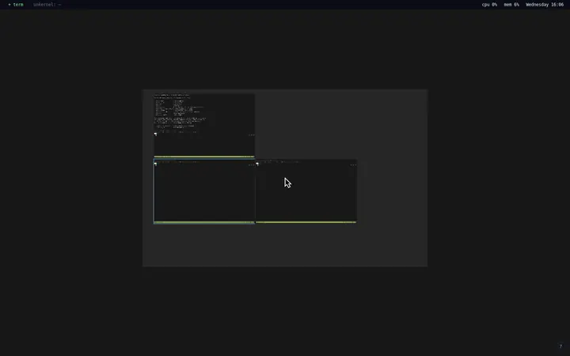
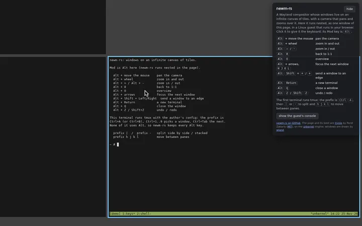
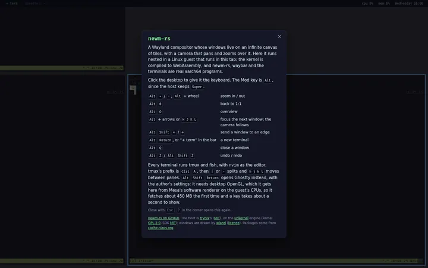

Zoom is a camera
Seven levels, from closer than 1:1 to far out. Pinch three fingers on a touchpad, or hold Mod and pinch; a plain two-finger pinch still reaches the app. Hold Mod and move the mouse to pan, with momentum you can tune.

newm-rs is a Wayland compositor where every window owns whole tiles of an endless 2D grid. Tiled windows never overlap, and a camera pans and zooms over them without resizing a single app.
Boots a real Linux guest in this tab, with nothing to install. Small demo @small-mb@ MB, full desktop with waybar, Neovim and Alacritty @full-mb@ MB.
A fork of niri, inspired by newm and KDE. Free software, GPL-3.0-or-later.
Every window owns a rectangle of tiles and no two share one. When a window grows or moves, its neighbours step aside. Nothing is ever covered.
Zooming changes how the canvas is drawn, not the windows. No app is resized or redraws because you zoomed. One action returns to 1:1.
The view slides just far enough to show the focused window whole. A window already on screen gets focus with no camera motion at all.
Sweep the pointer across the screen: focus, layout and camera stay where they are. Focus changes on a click.
Drag, swap, resize, pan and zoom all have bindable actions, and both go through the same placement rules, so they land on the same tiles.
The layout is a small integer grid searched with a range tree: over 2,612 real operations, the median takes 46 µs. Disk writes never block the screen.
The canvas is an unbounded grid of tiles, 720 × 465 logical pixels each by default. Each tiled window spans whole tiles, drawn 1:1 at its own size. Your screen shows part of that plan through a camera, and the tiles at its edges show in part.
Click a window, or use the arrows: the camera slides only as far as it must. Zoom never touches a window.
A diagram of the rules in the docs, not a screenshot.
Seven levels, from closer than 1:1 to far out. Pinch three fingers on a touchpad, or hold Mod and pinch; a plain two-finger pinch still reaches the app. Hold Mod and move the mouse to pan, with momentum you can tune.

niri's overview shows every window at once; newm-rs dims everything outside what the screen shows. A minimap in the corner tracks the camera and the windows whenever something moves.

A new window opens on the free spot nearest the focused one, the spot the camera scrolls least to show, at the size the app picks, rounded to whole tiles. newm-rs remembers each app's last size, and opening a window never moves another.
Log out and back in, and every window returns to its tiles. Terminals reattach their tmux and ssh sessions.
When a window moves, swaps or grows, the windows in its way step aside, live, while you drag. newm-rs picks the arrangement by three rules, and you can undo and redo every one.
The cheapest arrangement wins. Each tile a window moves adds to the cost, so the rest of your canvas stays put.
Windows sharing a side form an island. Windows connected before a move stay connected after it.
A window making room may move diagonally, but it pays for it, so it keeps its row or column when it can.
These rules are not a hope. A Rocq model proves the canvas's rules: no overlap, minimum sizes kept, the zoom as a camera, the least camera motion. A VM suite runs real apps against newm-rs.
Everything the mouse can do has an action you can bind: focus, resize by edges, send to an edge, swap with a neighbour, gather islands, zoom, undo. The suggested binds put the whole canvas under one hand.
Or keep the other hand on the mouse: Mod and a drag moves a window, Mod and a right-drag resizes it with a preview, Mod and the wheel zooms one level per notch.
Suggested binds from input.md, not defaults. Mod is Super in a session, Alt when newm-rs runs nested in a window. Alt+Tab, Alt+Q and Mod+Return keep the meaning other desktops taught you.
No VM to install, no ISO to flash. The demo boots a Linux guest right here: the kernel is compiled to WebAssembly, and newm-rs and the terminals are real aarch64 programs, running nested as one window of the page.

Try it in your browser newm-rs, terminals and tmux. The fastest way in. @small-mb@ MB download
Full desktop waybar, Neovim and Alacritty, with the author's settings. @full-mb@ MB downloadClick the desktop to give it the keyboard. The Mod key is Alt there, since your own desktop keeps Super. In the full desktop, Alacritty draws with your GPU: its OpenGL ES goes to the page's WebGL2. Ghostty, the author's own terminal, needs desktop OpenGL 4.3, which a browser cannot give it yet.
The boot is trynix by Farid Zakaria (MIT), on the unkernel engine; windows are drawn by wland. Packages come from cache.nixos.org.
newm-rs is niri with a different layout. niri gives it the backends, rendering, input, protocols, IPC, config, animations and the overview, and newm-rs tracks niri's main branch.
| Your session | Log out and back in and every window returns to its tiles. Terminals reattach tmux and ssh; Chromium-family browsers relaunch with their last session, and Firefox restores its own. |
|---|---|
| KDE | KDE global shortcuts, KRunner's window search, Spectacle screenshots and recordings, KDE Connect's remote input, the KDE portals. |
| Every toolkit | GTK 3 and 4, libadwaita, Qt, Firefox, Chromium, Electron and X11 apps, crisp at fractional scale. |
| The lock | The screen stays locked even if the locker crashes. The bundled newm-rs-lock never exits while the session is locked. |
| Stability | A Rocq model proves the canvas's rules. Main-loop work of 8 ms or more names itself in the log. Session saves run on their own threads. |
| Your config | niri's KDL config, from the same place. Every niri option keeps working; newm-rs adds layout { canvas { } } and a few bind actions. |
The flake builds newm-rs with the canvas, for every Linux system nixpkgs offers. Inside your current desktop it opens as a window, where Mod is Alt.
nix run github:eordano/newm-rsnix build github:eordano/newm-rsThe package holds newm-rs, newm-rs-lock, newm-rs-session,
the systemd user units and a newm-rs session for your display manager. The
flake's overlays.default adds newm-rs to nixpkgs.
cargo build --release --features canvasIt needs the libraries niri needs. Start the session from a TTY with
newm-rs-session. The README has the details.
One click, one tab, a real Linux desktop on a tile canvas.